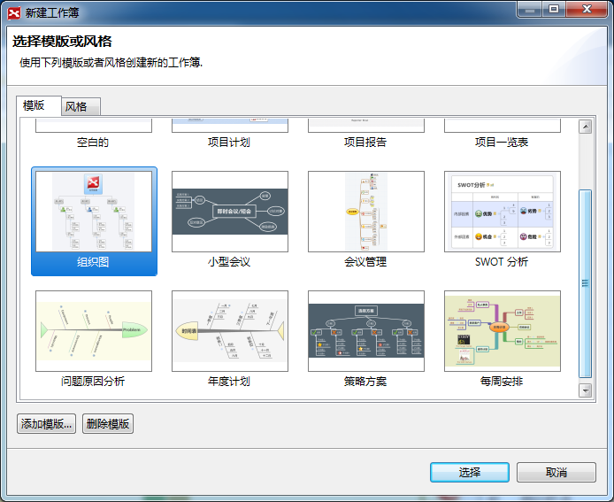
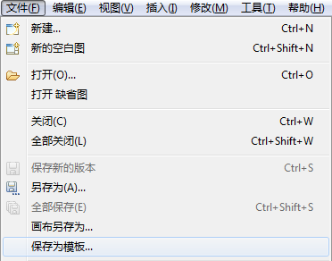

XMIND中的模板是独立的“.XMT”文件。它们可以单独传播。XMIND自带了12种模板：缺省模板、鱼骨图、流程图、组织结构图以及二维图。 XMIND还允许并鼓励用户创建属于自己的的思维图模板。方法如下：
按照下列方法使用XMIND自带的模板：
- 在菜单栏选择“文件 > 新建”
- 然后在模版选择框中选择合适的模版

按照下列步骤创建您自己的模板：
- 按照您的需要新建一张思维图：
- 选择主题的样式，包括字体、形状、颜色等等；
- 选择线条的形状、颜色；
- 确定思维图的样式，例如：墙纸、背景色、透明度、图例等等。
- 在菜单栏选择“文件 > 保存为模板…”；
- 选择模板文件保存位置并保存。

添加自有模版到XMind:
- 从菜单选择"文件 -- 新建"
- 在模版选择框的下面点击 "添加模版"
- 从本机选择模版（.xmt文件），然后添加即可
现在您可以使用您自己的模版创建新的思维图!
您可能还对下列内容感兴趣……